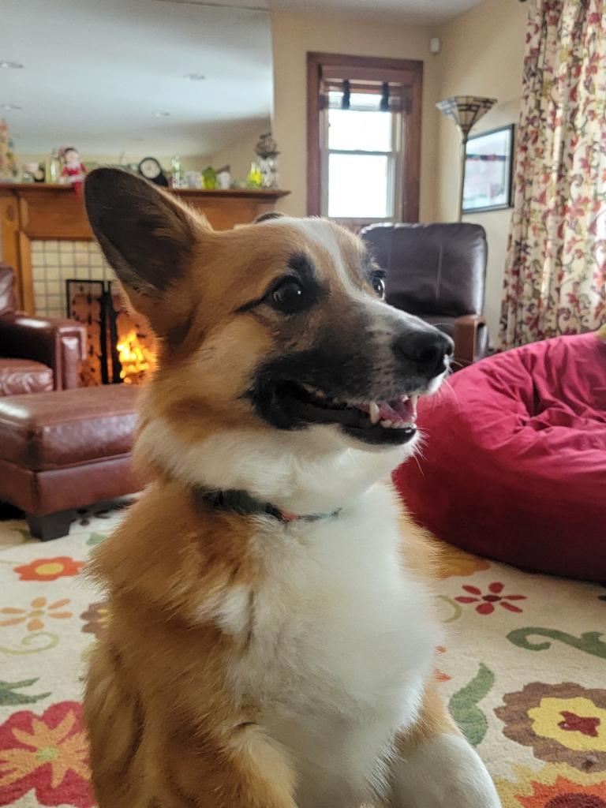

Rorris Dog Walking LLC was established in 2014. My love for animals and walking in the fresh air made dog walking the perfect job for me.
My first dog walking pursuit began after I finished a Psychology Degree from Ohio State University. I traveled to Hollywood Hills, California and began my dog walking career. Eventually I left Hollywood and started Rorris Dog Walking LLC in Columbus, OH. I have been happily walking dogs for over a decade.
The second part of my journey began in 2022. As my love for dogs continued to grow, I became interested in dog behavior. I started volunteering as a teaching assistant in a puppy training class. Eventually I was offered a position as a dog trainer. This training program was rigorous, but I was committed! After countless hours of book learning, shadowing trainers with clients, driving to Washington DC to work with a highly skilled and top-notch trainer, more puppy classes and shadowing knowledgeable trainers, I officially became a dog trainer.
Training work has been deeply rewarding! I enjoy helping folks understand why their dogs are behaving in certain ways and teaching solutions to many behavior problems. Dog training has helped me to become an even better dog walker.
